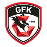

63 maç · 0 sonuçlandı
 Sociedad –
Sociedad –  Real MadridLa Liga · Çar 02.12 21:00Real Madrid –
Real MadridLa Liga · Çar 02.12 21:00Real Madrid –  AlavesLa Liga · Cmt 28.11 23:00
AlavesLa Liga · Cmt 28.11 23:00 SC Paderborn 07 –
SC Paderborn 07 –  Schalke 04Bundesliga · Cmt 28.11 17:30
Schalke 04Bundesliga · Cmt 28.11 17:30 Freiburg –
Freiburg –  RB LeipzigBundesliga · Paz 29.11 17:30
RB LeipzigBundesliga · Paz 29.11 17:30 Torino – LazioSerie A · Cmt 28.11 20:00
Torino – LazioSerie A · Cmt 28.11 20:00 Çaykur Rizespor –
Çaykur Rizespor –  KasımpaşaSüper Lig · Cum 27.11 20:00
KasımpaşaSüper Lig · Cum 27.11 20:00 Arsenal – Man CityPremier League · Paz 29.11 19:30
Arsenal – Man CityPremier League · Paz 29.11 19:30
Gaziantep FK – AmedsporSüper Lig · Cmt 28.11 19:00
AmedsporSüper Lig · Cmt 28.11 19:00| Saat | Maç | Skor | Kademe seçimleri |
|---|---|---|---|
| Cum 27.11 20:00 | Alanyaspor – Konyaspor | – | S: Konyaspor kaybetmez · D: Karşılıklı gol var · C: Alanyaspor 2+ gol atar |
| Cum 27.11 20:00 | Çaykur Rizespor – Kasımpaşa | – | D: Çaykur Rizespor kazanır · C: 1.5 alt |
| Cum 27.11 22:30 | Werder Bremen – M'gladbach | – | S: 2.5 üst · D: M'gladbach kaybetmez · C: M'gladbach 2+ gol atar |
| Cum 27.11 22:45 | Venezia – Bologna | – | S: Venezia kaybetmez · D: Karşılıklı gol var · C: Beraberlik |
| Cum 27.11 22:45 | Brest – Paris FC | – | S: Brest kaybetmez · D: 2.5 alt · C: Beraberlik |
| Cum 27.11 23:00 | Nott'm Forest – Chelsea | – | S: Chelsea kaybetmez · D: Karşılıklı gol var · C: Beraberlik |
| Cum 27.11 23:00 | Levante – Racing Santander | – | S: Karşılıklı gol var · D: Racing Santander kaybetmez · C: Racing Santander kazanır |
| Cmt 28.11 16:00 | Samsunspor – Gençlerbirliği | – | S: Samsunspor kazanır · D: Karşılıklı gol var · C: Samsunspor kazanır ve 2.5 üst |
| Cmt 28.11 16:00 | Betis – Vallecano | – | S: Betis kazanır · D: Betis kazanır ve 2.5 üst · C: Vallecano 2+ gol atar |
| Cmt 28.11 17:00 | Frosinone – Parma | – | S: Frosinone 2+ gol atar · D: Frosinone kazanır ve 2.5 üst · C: Parma 2+ gol atar |
| Cmt 28.11 17:30 | FC Koln – SV Elversberg | – | S: Karşılıklı gol var · D: SV Elversberg kaybetmez · C: SV Elversberg kazanır |
| Cmt 28.11 17:30 | Hamburg – Bayern Munich | – | S: Bayern Munich kazanır ve 2.5 üst · D: Karşılıklı gol yok · C: Hamburg 2+ gol atar |
| Cmt 28.11 17:30 | Mainz – Union Berlin | – | S: Mainz 2+ gol atar · D: Mainz kazanır ve 2.5 üst · C: Union Berlin 2+ gol atar |
| Cmt 28.11 17:30 | SC Paderborn 07 – Schalke 04 | – | S: 2.5 alt · D: 1.5 alt · C: Beraberlik |
| Cmt 28.11 18:00 | Leeds – Coventry City | – | S: Leeds kazanır · D: 2.5 alt · C: 1.5 alt |
| Cmt 28.11 18:00 | Man United – Brentford | – | S: Karşılıklı gol var · D: Man United 2+ gol atar · C: Man United kazanır ve 2.5 üst |
| Cmt 28.11 18:15 | Málaga – Ath Bilbao | – | S: Ath Bilbao kazanır · D: Karşılıklı gol yok · C: Ath Bilbao kazanır ve 2.5 üst |
| Cmt 28.11 19:00 | Gaziantep FK – Amedspor | – | S: Karşılıklı gol var · D: Amedspor 2+ gol atar · C: Amedspor kazanır ve 2.5 üst |
| Cmt 28.11 19:15 | Angers – Lens | – | S: Lens kazanır · D: 2.5 alt · C: Lens 2+ farkla kazanır |
| Cmt 28.11 20:00 | Torino – Lazio | – | D: Torino kaybetmez · C: Torino 2+ gol atar |
| Cmt 28.11 20:30 | Ipswich – Aston Villa | – | S: Karşılıklı gol var · D: Ipswich kaybetmez · C: Ipswich kazanır |
| Cmt 28.11 20:30 | Elche – Ath Madrid | – | S: Ath Madrid kazanır · D: Ath Madrid kazanır ve 2.5 üst · C: Elche 2+ gol atar |
| Cmt 28.11 20:30 | Stuttgart – Ein Frankfurt | – | S: 2.5 üst · D: 3.5 üst · C: Ein Frankfurt kazanır |
| Cmt 28.11 22:45 | Inter – Genoa | – | S: 2.5 üst · D: Karşılıklı gol var · C: Genoa kaybetmez |
| Cmt 28.11 22:45 | Le Havre – Strasbourg | – | S: Le Havre kaybetmez · D: 2.5 alt · C: Le Havre kazanır |
| Cmt 28.11 22:45 | Le Mans – Lille | – | S: 2.5 alt · D: Le Mans kaybetmez · C: 1.5 alt |
| Cmt 28.11 22:45 | Nice – Troyes | – | S: Nice kazanır · D: Karşılıklı gol yok · C: 3.5 üst |
| Cmt 28.11 22:45 | Paris SG – Lorient | – | S: 2.5 üst · D: 3.5 üst |
| Cmt 28.11 23:00 | Real Madrid – Alaves | – | S: 2.5 üst · D: 3.5 üst |
| Paz 29.11 13:30 | Çorum FK – Kocaelispor | – | S: Karşılıklı gol var · D: 2.5 alt · C: Kocaelispor 2+ gol atar |
| Paz 29.11 14:30 | Udinese – Fiorentina | – | S: Udinese kaybetmez · D: 2.5 alt · C: Udinese kazanır |
| Paz 29.11 15:00 | Everton – Liverpool | – | S: 2.5 alt · D: Liverpool kazanır · C: 1.5 alt |
| Paz 29.11 16:00 | Eyüpspor – Başakşehir | – | S: Başakşehir 2+ gol atar · D: Karşılıklı gol yok · C: Eyüpspor kaybetmez |
| Paz 29.11 16:00 | Valencia – Osasuna | – | S: 2.5 alt · D: Karşılıklı gol yok · C: 1.5 alt |
| Paz 29.11 17:00 | Sassuolo – Napoli | – | S: 2.5 üst · D: Napoli kazanır ve 2.5 üst · C: Sassuolo 2+ gol atar |
| Paz 29.11 17:00 | Auxerre – Marseille | – | S: Karşılıklı gol var · D: Marseille kazanır · C: Marseille 2+ farkla kazanır |
| Paz 29.11 17:05 | Brighton – Newcastle | – | S: Brighton 2+ gol atar · D: Karşılıklı gol yok · C: Newcastle 2+ gol atar |
| Paz 29.11 17:05 | Crystal Palace – Hull City | – | S: 2.5 alt · D: Hull City kaybetmez · C: Beraberlik |
| Paz 29.11 17:05 | Fulham – Bournemouth | – | S: Bournemouth kaybetmez · D: Karşılıklı gol var · C: Fulham 2+ gol atar |
| Paz 29.11 17:05 | Sunderland – Tottenham | – | S: 2.5 alt · D: Tottenham kazanır · C: Tottenham kazanır ve 2.5 alt |
| Paz 29.11 17:30 | Freiburg – RB Leipzig | – | S: Karşılıklı gol var · D: Freiburg 2+ gol atar · C: 2.5 alt |
| Paz 29.11 18:15 | Deportivo – Barcelona | – | S: Barcelona kazanır ve 2.5 üst · D: 3.5 üst · C: Deportivo 2+ gol atar |
| Paz 29.11 19:00 | Fenerbahçe – Erzurumspor | – | S: 2.5 üst · D: 3.5 üst |
| Paz 29.11 19:15 | Toulouse – Rennes | – | S: Toulouse kaybetmez · D: 2.5 üst · C: 3.5 üst |
| Paz 29.11 19:30 | Arsenal – Man City | – | S: 2.5 alt · D: Man City kaybetmez · C: 1.5 alt |
| Paz 29.11 19:30 | Hoffenheim – Augsburg | – | S: Karşılıklı gol var · D: 3.5 üst · C: Augsburg kazanır |
| Paz 29.11 20:00 | Roma – Monza | – | S: 2.5 üst · D: Karşılıklı gol var |
| Paz 29.11 20:30 | Celta – Villarreal | – | S: Villarreal kaybetmez · D: 2.5 üst · C: 3.5 üst |
| Paz 29.11 21:30 | Dortmund – Leverkusen | – | S: 2.5 üst · D: Dortmund kazanır · C: Dortmund 2+ farkla kazanır |
| Paz 29.11 22:45 | Como – Juventus | – | D: 2.5 alt · C: Juventus 2+ gol atar |
| Paz 29.11 22:45 | Lyon – Monaco | – | S: Monaco kaybetmez · D: 2.5 üst · C: Monaco kazanır |
| Paz 29.11 23:00 | Sociedad – Sevilla | – | S: Karşılıklı gol var · D: Sevilla kaybetmez · C: 3.5 üst |
| Pzt 30.11 19:00 | Göztepe – Trabzonspor | – | S: Karşılıklı gol var · D: Trabzonspor kazanır · C: Trabzonspor 2+ farkla kazanır |
| Pzt 30.11 20:30 | Lecce – Atalanta | – | D: Karşılıklı gol var · C: Atalanta kazanır ve 2.5 üst |
| Pzt 30.11 21:00 | Beşiktaş – Galatasaray | – | S: 2.5 üst · D: 3.5 üst · C: Karşılıklı gol yok |
| Pzt 30.11 22:45 | Cagliari – Milan | – | S: Milan kazanır · D: Karşılıklı gol var · C: Milan 2+ farkla kazanır |
| Pzt 30.11 23:00 | Espanol – Getafe | – | S: 2.5 alt · D: Getafe kaybetmez · C: 1.5 alt |
| Sal 01.12 23:00 | Coventry City – Ipswich | – | S: Ipswich kaybetmez · D: 2.5 üst · C: Ipswich kazanır |
| Çar 02.12 21:00 | Sociedad – Real Madrid | – | S: Real Madrid kazanır · D: Real Madrid kazanır ve 2.5 üst · C: Sociedad 2+ gol atar |
| Çar 02.12 22:30 | Chelsea – Crystal Palace | – | S: 2.5 üst · D: Crystal Palace kaybetmez · C: Crystal Palace 2+ gol atar |
| Çar 02.12 22:30 | Hull City – Nott'm Forest | – | S: 2.5 alt · D: Hull City kazanır · C: Hull City kazanır ve 2.5 alt |
| Çar 02.12 22:30 | Liverpool – Sunderland | – | S: Liverpool kazanır · D: Karşılıklı gol var |
| Çar 02.12 22:30 | Man City – Leeds | – | S: Man City kazanır · D: Karşılıklı gol var · C: Leeds 2+ gol atar |